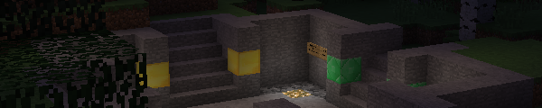

Server Information
| Address | smp.projectenyo.eu |
| Status | - |
| Players online | - |

| Address | smp.projectenyo.eu |
| Status | - |
| Players online | - |
The Survival server exists to provide classic Minecraft Survival PVP from what you may remember from the earlier days of Minecraft multiplayer.
You are safe from PVP if you stick to the area surrounding the spawn point, and you may build freely there. Leaving it for the Wilderness means you can get killed by other players.
Certain aspects of gameplay are altered from standard Minecraft;
| Command | Description |
|---|---|
/helpop <message> |
Message online OPs. |
/modreq <request> |
Create a ticket if you need help from OPs. |
/msg <user> <message> |
Sends a private message to the specified player. |
/mail <user> <message> |
Sends an intra-server mail. |
We let you claim land to avoid having to hide underground or getting your base raided when you are not online.
As a new player, you may create your first small claim centred around you with /claim.
Future claims require a golden shovel.
The Nether is no mans land, and no land can be claimed there.
Keep in mind claims decay over time, which means if you are away for a while other players can access your base. Players can enter your claim and loot your containers if they have a way inside; consider using iron doors and stone buttons or levers instead of wooden.
After acquiring a golden shovel, you can now create additional claims and create larger claims. You can also extend your already made claims. Using a stick you can click a block to inspect if it is claimed or not, and see the size of the claim.
| Command | Description |
|---|---|
/claim |
Creates a claim. First claim is free, addition require a golden shovel. |
/declaim |
Removes a claim. |
/claimslist |
Lists your claims so you can keep track of them. |
/trust <user> |
Trusts someone to your claim. |
/trust public |
Lets the general public build in the claim while preventing others being able to claim your build. |
/untrust <user>/public |
Untrusts someone to your claim. |
/trapped |
Teleports you out if you are stuck in someones claim. |
You can vote for the server on Planet Minecraft or FindMCServer to help the server get more recognition.
The rules can be found here.